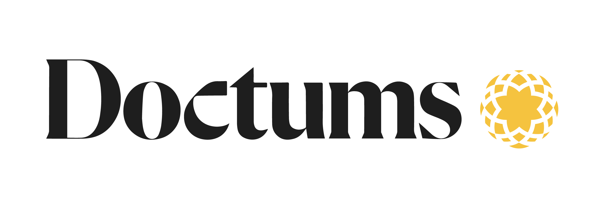

04 / 12Each engagement is scoped to how your teams actually operate — sequenced, instrumented, and owned alongside your staff, not handed over as a slide deck.
Scalable cloud learning platforms, integrated with the systems you already run.
Static models become dynamic, measurable experiences without disrupting continuity.
Outcomes instrumented end to end, on dashboards leaders trust.